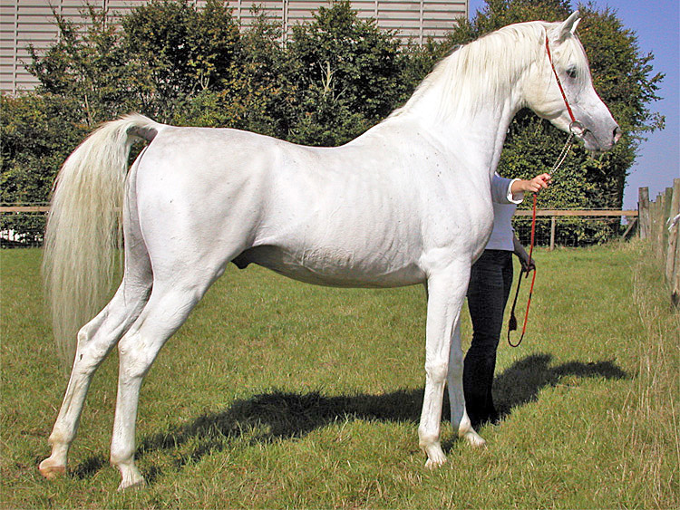
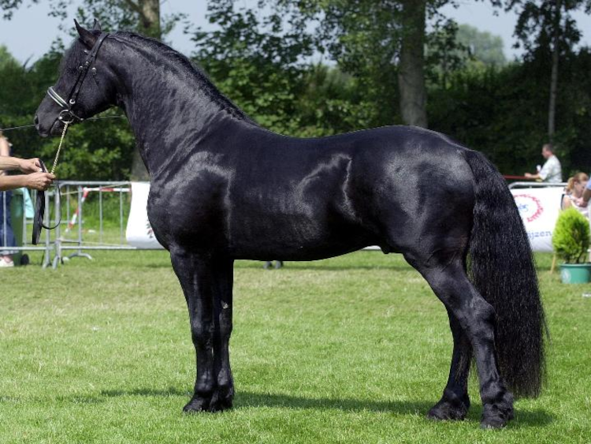
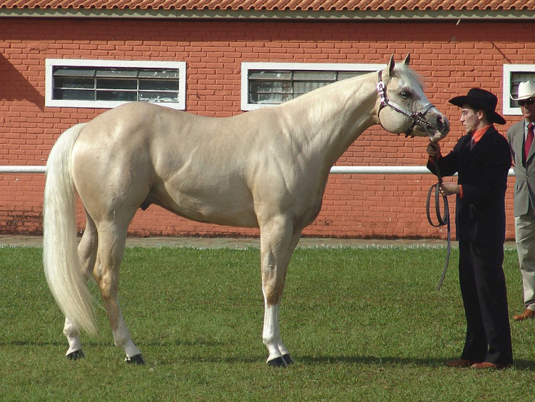
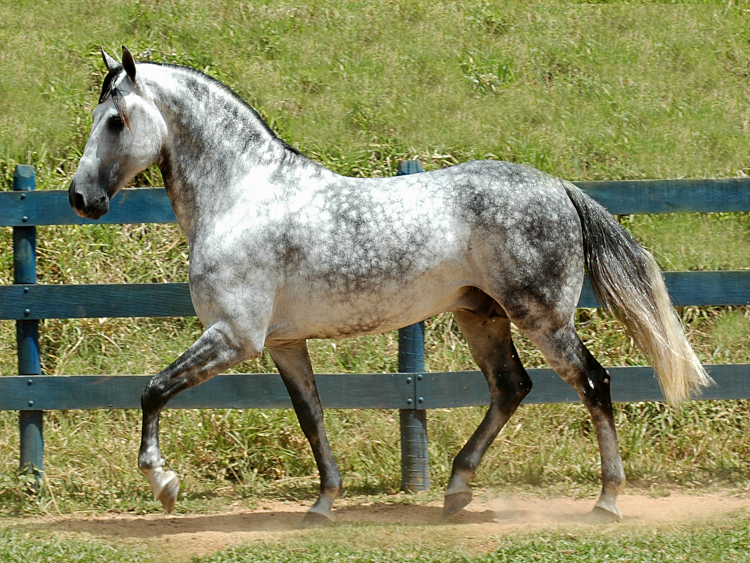

Bem vindo ao site virtual da Encita! Aqui você aprenderá um pouco sobre seu fiel companheiro! Assim entendo melhor sobre seu grande amigo!
Baixe agora um pequeno tutorial para lavar seu cavalo provenido do site Organnact! Baixar
|  Árabe |
 Árabo-frísio |
 Quarto de Milha |
 Mangalarga Marchador |
|---|